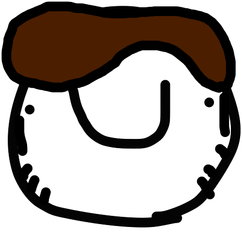

Ricardo Base
 El Ricardo más Ricardo que hay, más simple que un pan e igual de bueno
El Ricardo más Ricardo que hay, más simple que un pan e igual de bueno
Ricardo Píxel
Ricardo Pixel es un curioso, es como una subespecie de Ricardo que tiene sus propias formas y estan por debajo
en el escalafón social Ricardil. Además no se calla la boca
Ricardo Presidente
El presi de RicardoLandia. Nadie votó por el y nadie sabe por qué es presidente pero lo es
Ricardo Moderno

Un Ricardo mas modernizado que se ha dejado crecer el tupé ahí con todo su arte
Ricardo Vicepresidente
Al ser Ricardos Píxeles no pudieron ascender a presidente pero eh, que son VICEpresidentes
SUPER RICARDO
.png) Este Ricardo le ha dado tan duro al gym que literalmente ÉL es el gym ahora
Este Ricardo le ha dado tan duro al gym que literalmente ÉL es el gym ahora
Ricardicono
El favicon de la página web de RicardoLandia. Brilla arcoíris
porque está contento aunque su calidad de imagen sea pésima